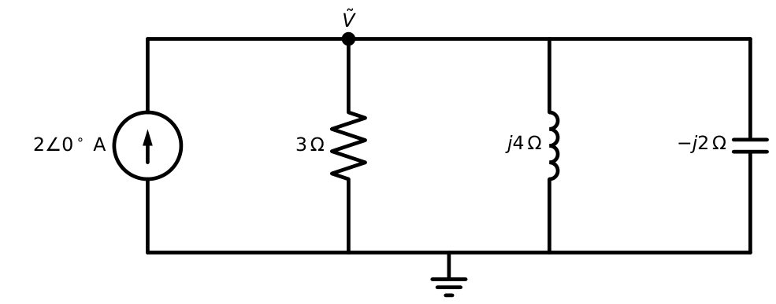
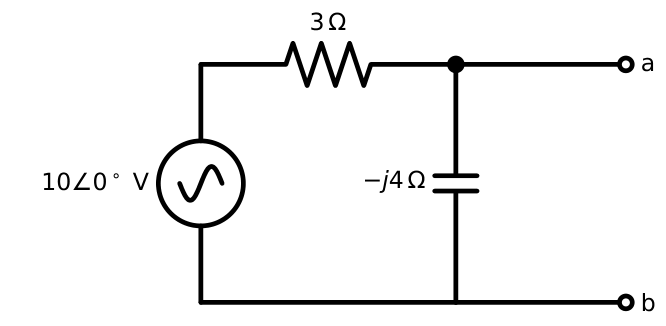
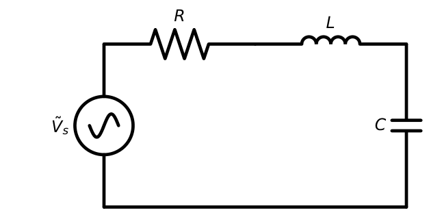
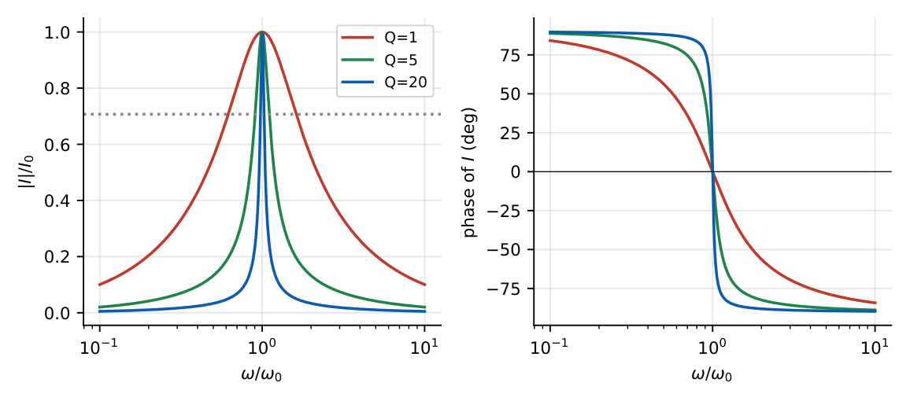
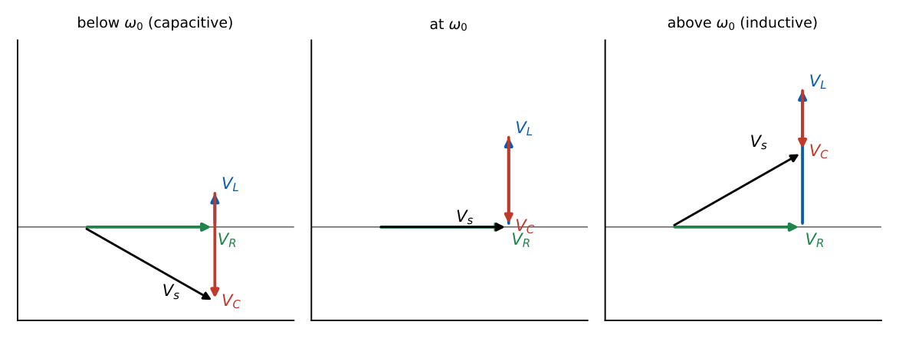
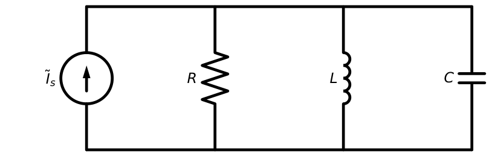
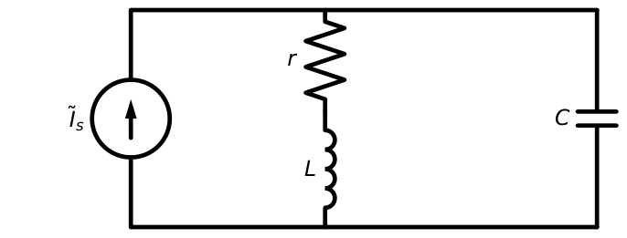
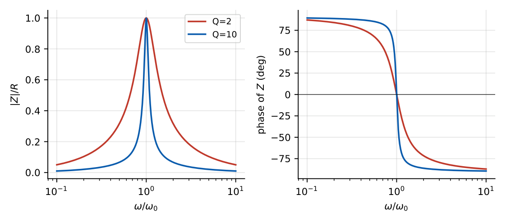
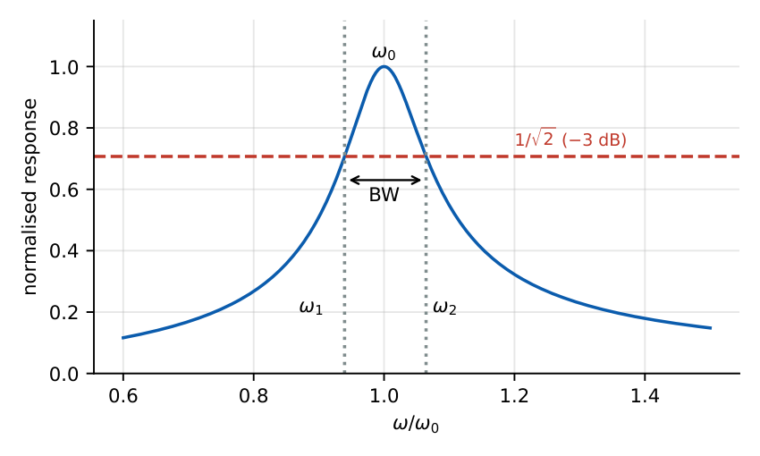

AC Circuit Analysis
In this chapter
Resonance (series and parallel: \(\omega_0\), \(Q\), bandwidth, voltages at resonance), phasor nodal/mesh analysis, AC Thevenin equivalents. Resonance is almost guaranteed to appear once per paper.
7.1 Kirchhoff’s laws in the phasor domain
\(\sum\tilde I_k=0\) at a node and \(\sum\tilde V_k=0\) around a loop, exactly as in DC, but with complex numbers. All DC methods (dividers, nodal, mesh, superposition, Thevenin, Norton, source transformation) carry over with \(R\to Z\), \(G\to Y\), provided all sources have the same frequency. If sources have different frequencies use superposition and add the time-domain responses.
7.2 Nodal analysis using phasors
Write KCL with admittances: \(\mathbf Y\mathbf V=\mathbf I\), where \(Y_{kk}=\sum\) admittances at node \(k\), \(Y_{kj}=-\sum\) admittance between \(k\) and \(j\).
A \(2\angle0^\circ\) A source feeds a node having \(3\ \Omega\), an inductor \(j4\ \Omega\) and a capacitor \(-j2\ \Omega\) to ground (Figure 7.1).
\(Y=\dfrac13+\dfrac1{j4}+\dfrac1{-j2}=0.333-j0.25+j0.5=0.333+j0.25=0.4167\angle36.87^\circ\) S.
\(\tilde V=\dfrac{\tilde I}{Y}=\dfrac{2}{0.4167\angle36.87^\circ}=4.8\angle-36.87^\circ\) V.

7.3 Mesh analysis using phasors
Write KVL with impedances: \(\mathbf Z\mathbf I=\mathbf V\), with \(Z_{kk}=\sum\) impedances in mesh \(k\) and \(Z_{kj}=-\sum\) impedance shared. Supermesh and dependent-source rules are identical to Chapter 3.
7.4 AC circuit theorems
Superposition, Thevenin, Norton, source transformation, reciprocity and maximum power transfer all work with phasors (Chapter 4). The Thevenin impedance \(Z_{Th}\) is complex.
7.5 AC Thevenin and Norton equivalent
A \(10\angle0^\circ\) V source in series with \(R=3\ \Omega\); a capacitor \(-j4\ \Omega\) across the output terminals \(a\)–\(b\) (Figure 7.2).
\(\tilde V_{Th}=10\times\dfrac{-j4}{3-j4}=8\angle-36.87^\circ=6.4-j4.8\) V. \(Z_{Th}=3\parallel(-j4)=\dfrac{-j12}{3-j4}=1.92-j1.44=2.4\angle-36.87^\circ\ \Omega\).
Norton current \(\tilde I_N=\tilde V_{Th}/Z_{Th}=10/3=3.33\angle0^\circ\) A (short circuit: only \(R\) remains). ✓

7.6 Resonance
A circuit is at resonance when the voltage and current at its input terminals are in phase (the input impedance is purely real). It occurs when the net reactance is zero.
7.7 Series resonance

\(Z=R+j(\omega L-\dfrac1{\omega C})\). At resonance \(\omega L=1/\omega C\):
\(\omega_0=\dfrac1{\sqrt{LC}}\), \(Z(\omega_0)=R\) (minimum), \(I_0=\dfrac{V_s}{R}\) (maximum).
\(Q=\dfrac{\omega_0L}{R}=\dfrac1{\omega_0CR}=\dfrac1R\sqrt{\dfrac LC}\), \(BW=\omega_2-\omega_1=\dfrac{\omega_0}{Q}=\dfrac RL\).
Half-power frequencies: \(\omega_{1,2}=\omega_0\left[\sqrt{1+\dfrac1{4Q^2}}\mp\dfrac1{2Q}\right]\), \(\omega_0=\sqrt{\omega_1\omega_2}\) (geometric mean).
At resonance \(|V_L|=|V_C|=QV_s\) (voltage magnification), with \(V_L\) and \(V_C\) in antiphase.
Half power occurs where \(|I|=I_0/\sqrt2\), i.e. where \(|X|=R\): \(\omega L-1/\omega C=\pm R\). Solving \(\omega^2LC\mp\omega RC-1=0\) gives \(\omega=\pm\dfrac{R}{2L}+\sqrt{\left(\dfrac R{2L}\right)^2+\dfrac1{LC}}\). Their difference is \(R/L\) and their product is \(1/LC\).

\(R=2\ \Omega\), \(L=1\) mH, \(C=10\ \mu\)F, \(V_s=10\) V.
\(\omega_0=1/\sqrt{10^{-3}\times10^{-5}}=10^4\) rad/s (\(f_0=1.59\) kHz). \(Q=\omega_0L/R=10^4\times10^{-3}/2=5\). \(BW=R/L=2000\) rad/s (\(318\) Hz).
\(\omega_{1,2}=10^4(\sqrt{1.01}\mp0.1)=9050,\ 11050\) rad/s. \(I_0=5\) A. \(V_C=V_L=QV_s=50\) V, five times the source voltage.

7.8 Parallel resonance


Ideal parallel \(RLC\) driven by a current source: \(Y=\dfrac1R+j(\omega C-\dfrac1{\omega L})\); resonance at \(\omega_0=1/\sqrt{LC}\) where \(Y=1/R\) (minimum admittance, maximum impedance \(R\)).
\(\omega_0=\dfrac1{\sqrt{LC}}\), \(Q=\dfrac R{\omega_0L}=\omega_0CR=R\sqrt{\dfrac CL}\), \(BW=\dfrac{\omega_0}Q=\dfrac1{RC}\).
At resonance the branch currents in \(L\) and \(C\) are each \(Q\) times the source current (current magnification).
Practical tank (coil resistance \(r\) in series with \(L\), in parallel with \(C\)): \[\omega_0=\sqrt{\frac1{LC}-\frac{r^2}{L^2}}\approx\frac1{\sqrt{LC}}\ (Q_L\gg1),\quad Z_{dyn}=\frac{L}{Cr}=Q_L^2\,r,\quad Q_L=\frac{\omega_0L}{r}.\]

\(R=100\ \Omega\), \(L=1\) mH, \(C=10\ \mu\)F: \(\omega_0=10^4\) rad/s, \(Q=R/\omega_0L=100/10=10\), \(BW=1/RC=1000\) rad/s \(=\omega_0/Q\). ✓
\(L=1\) mH, \(r=1\ \Omega\), \(C=10\ \mu\)F: \(\omega_0=\sqrt{10^8-10^6}=9950\) rad/s, \(Q_L\approx10\), \(Z_{dyn}=L/Cr=10^{-3}/10^{-5}=100\ \Omega\).
7.9 Quality factor
\(Q=2\pi\dfrac{\text{peak energy stored}}{\text{energy dissipated per cycle}}=\dfrac{\omega_0\,W_{stored}}{P_{loss}}\). For a coil, \(Q_L=\omega L/r\); for a capacitor, \(Q_C=1/(\omega Cr_C)\).
7.10 Bandwidth and selectivity
Bandwidth \(BW=f_2-f_1\) (half-power, \(-3\) dB points). Selectivity is \(f_0/BW=Q\). A high-\(Q\) circuit is more selective. For \(Q\ge10\) the resonance curve is nearly symmetric and \(\omega_{1,2}\approx\omega_0\mp BW/2\).

(i) In series resonance the circuit does not amplify power, but component voltages \(V_L\), \(V_C\) can exceed the source by the factor \(Q\). (ii) The resonant frequency at which current is maximum for a practical tank is not exactly where \(|Z|\) is maximum; GATE usually asks for the ideal \(1/\sqrt{LC}\). (iii) In a parallel circuit \(BW=1/RC\), in series \(BW=R/L\): do not swap them. (iv) \(\omega_{1,2}\) are not symmetric about \(\omega_0\) (geometric mean).
Q1. A series \(RLC\) has \(L=1\) H, \(C=1\) F. Its resonant frequency is (A) \(1\) rad/s (B) \(\sqrt2\) rad/s (C) \(2\pi\) rad/s (D) \(0.5\) rad/s.
Q2. At series resonance, the phase difference between \(V_L\) and \(V_C\) is (A) \(0^\circ\) (B) \(90^\circ\) (C) \(180^\circ\) (D) \(45^\circ\).
Q3. In a parallel \(RLC\) circuit at resonance, the impedance is (A) minimum (B) maximum and equal to \(R\) (C) zero (D) purely reactive.
Answers: Q1 (A). Q2 (C). Q3 (B).
Q4. A series \(RLC\) with \(R=5\ \Omega\), \(L=20\) mH, \(C=0.5\ \mu\)F is driven by \(10\) V. The voltage across \(C\) at resonance is (A) \(10\) V (B) \(200\) V (C) \(400\) V (D) \(2000\) V.
Q5. A circuit with \(\omega_0=10^5\) rad/s and \(Q=50\) has half-power bandwidth (A) \(500\) rad/s (B) \(2000\) rad/s (C) \(5000\) rad/s (D) \(50\) rad/s.
Answers: Q4 (C): \(Q=\frac1R\sqrt{L/C}=\frac15\sqrt{0.02/0.5\times10^{-6}}=\frac15\sqrt{40000}=40\); \(V_C=QV_s=400\) V. Q5 (B): \(10^5/50=2000\).
Q6. A series \(RLC\) has \(\omega_1=900\) rad/s and \(\omega_2=1600\) rad/s as half-power frequencies. Its resonant frequency is rad/s.
Q7. A parallel \(RLC\) has \(R=50\ \Omega\), \(L=2\) mH, \(C=20\ \mu\)F. Its quality factor is .
Answers: Q6: \(\sqrt{900\times1600}=1200\) rad/s. Q7: \(\omega_0=1/\sqrt{4\times10^{-8}}=5000\) rad/s; \(Q=R/\omega_0L=50/(5000\times0.002)=5\).
Q8. At series resonance of an \(RLC\) circuit: (A) \(|Z|\) is minimum. (B) \(V_R=V_s\). (C) power factor is unity. (D) current is minimum.
Answers: Q8: (A), (B), (C).
(i) Using \(Q=R/\omega_0L\) for series (that is for parallel). (ii) Forgetting the \(\tfrac12\) in \(BW=\omega_0/Q\) derivations of \(\omega_{1,2}\). (iii) Taking the arithmetic mean of \(\omega_1,\omega_2\) as \(\omega_0\). (iv) Applying phasors to circuits with multiple frequencies without superposition.
T1. A series \(RLC\): \(R=10\ \Omega\), \(L=0.1\) H, \(C=10\ \mu\)F. Find \(\omega_0\), \(Q\), \(BW\).
T2. Find \(V_C\) at resonance in T1 if \(V_s=20\) V.
Answers: T1: \(\omega_0=1/\sqrt{10^{-6}}=1000\) rad/s; \(Q=\omega_0L/R=10\); \(BW=100\) rad/s. T2: \(200\) V.
- Resonance: \(\Imag\{Z_{in}\}=0\). \(\omega_0=1/\sqrt{LC}\).
- Series: \(Q=\omega_0L/R=(1/R)\sqrt{L/C}\); \(BW=R/L\); \(V_L=V_C=QV_s\); \(Z_{min}=R\).
- Parallel: \(Q=R/\omega_0L=R\sqrt{C/L}\); \(BW=1/RC\); \(I_L=I_C=QI_s\); \(Z_{max}=R\).
- \(\omega_{1,2}=\omega_0[\sqrt{1+1/4Q^2}\mp1/2Q]\); \(\omega_0=\sqrt{\omega_1\omega_2}\); \(BW=\omega_2-\omega_1\).
- Tank: \(\omega_0\approx1/\sqrt{LC}\), \(Z_{dyn}=L/Cr=Q^2r\).
- Different frequencies \(\Rightarrow\) superposition in the time domain.